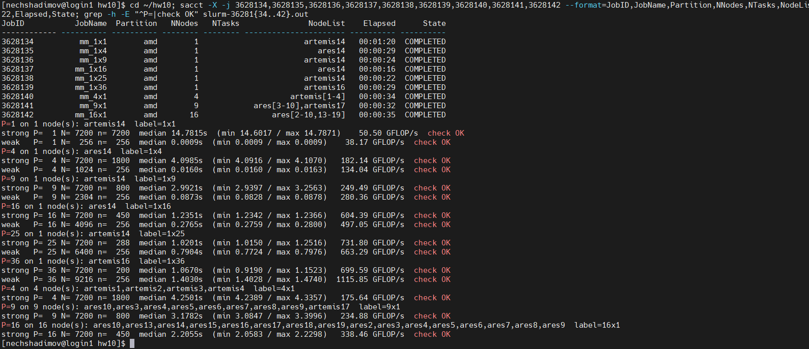
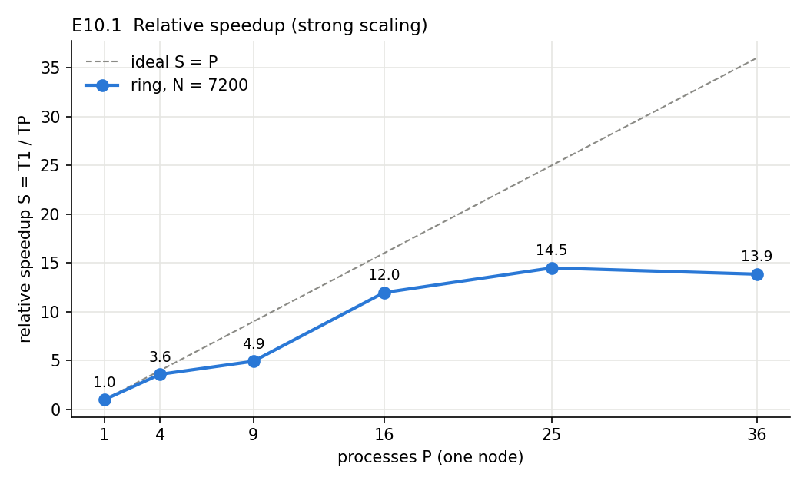
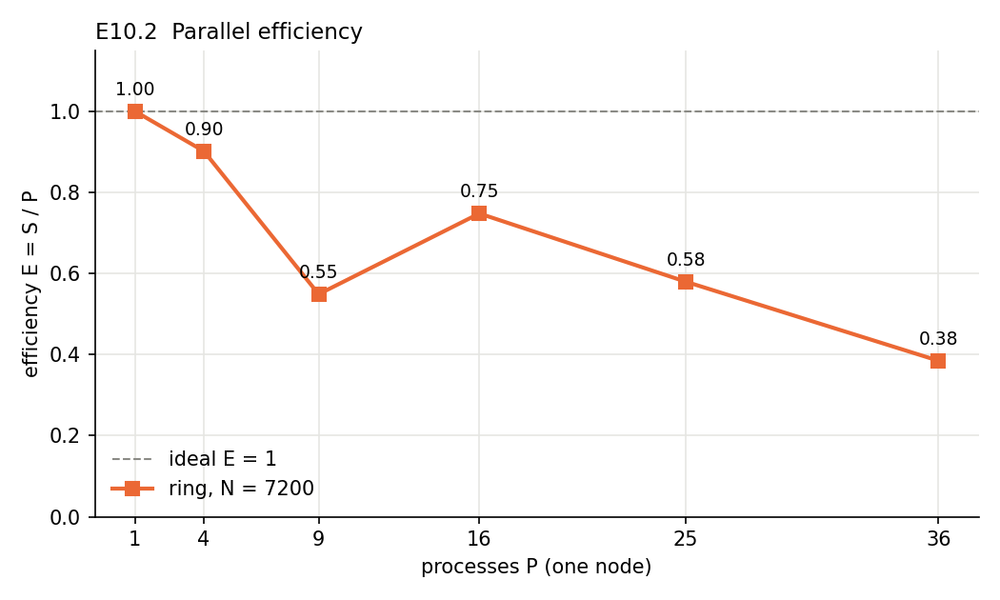
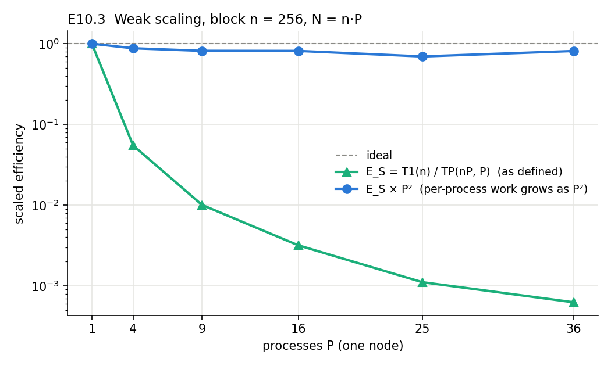
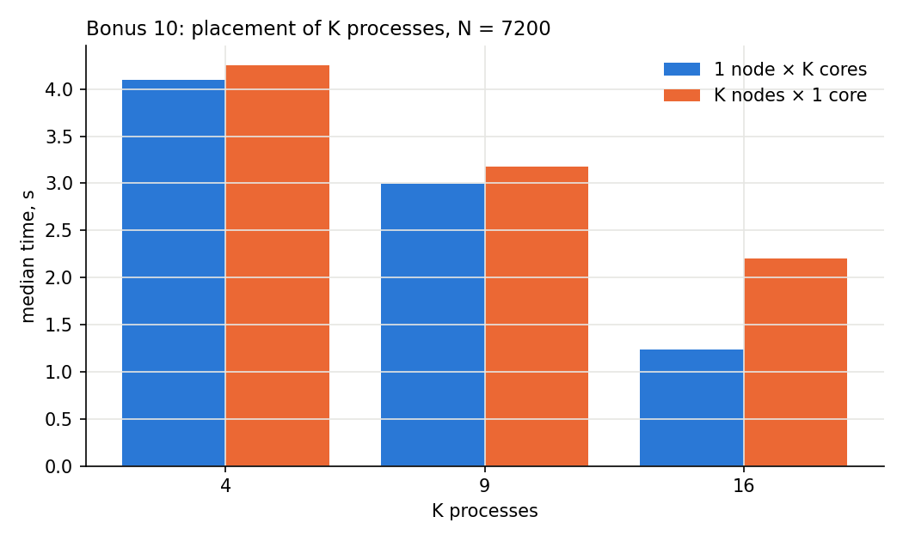

| Cluster | UT HPC rocket, SLURM 25.11.7, partition amd. Nodes: artemis* (AMD EPYC 7763) and ares* (AMD EPYC 7702), 256 logical CPUs per node |
| Software | openmpi/4.1.0, py-mpi4py/3.1.4, py-numpy/1.23.5, Python 3.9.12 (printed at the top of every .out) |
| Threads | OMP_NUM_THREADS=1, OPENBLAS_NUM_THREADS=1, MKL_NUM_THREADS=1: one core per MPI process, so the speedup comes only from MPI |
| Repetitions | 1 checked warm-up + 3 timed runs per configuration, median reported (min and max in summary_*.csv) |
| What is timed | MPI.Wtime() after a Barrier, maximum over ranks: the whole ring multiplication including the final Gather of $C$ to rank 0. Matrix generation is not timed |
py-mpi4py/3.1.2, which no longer exists on rocket. py-mpi4py/3.1.3 is built against mpich, while 3.1.4 depends on exactly openmpi/4.1.0, so 3.1.4 was used. NumPy has to be loaded explicitly: the default py-numpy switches Python to 3.10 and breaks mpi4py (the first test job, slurm-3628121.out, shows exactly this ImportError). py-numpy/1.23.5 is built for Python 3.9.12.testing, slurm-3628129.out, test_results_3628129.csv).--exclusive as recommended. The multi-node bonus runs did not, to avoid occupying 16 whole nodes for 16 cores.check OK.sacct for the 9 measurement jobs (all COMPLETED), followed by the result lines of every slurm-*.out.

ring_matrix_multiplication_nb (Ex 7.2) posts Isend/Irecv of the next block of $B$ before multiplying the current one, so communication overlaps with computation. In Assignment 7 it was the fastest or equal-fastest variant.| File | Content |
|---|---|
task7_1.py, task7_2.py | Ring multiplication from Assignment 7, unchanged (7.2 is the one being measured) |
task10_bench.py | Benchmark: each rank generates its own row block of $A$ and column block of $B$, Freivalds check, 3 timed runs, one CSV per job |
task10.sbatch | SLURM job script (modules, thread pinning, mpirun) |
submit_all.sh | Submits the 9 measurement jobs |
task10_plot.py | Tables summary_*.csv and the four figures in plots/ |
cluster/ | All slurm-*.out files and raw results_*.csv copied from rocket |
Fixed $N = 7200$ (divisible by 1, 4, 9, 16, 25 and 36), one node, $P$ MPI processes. $S = T_1 / T_P$, where $T_1$ is the same ring program on one process.
| P | Node (CPU) | Job | median T, s | min / max, s | S = T₁/T_P | E = S/P | GFLOP/s |
|---|---|---|---|---|---|---|---|
| 1 | artemis14 (7763) | 3628134 | 14.781 | 14.602 / 14.787 | 1.00 | 1.00 | 50.5 |
| 4 | ares14 (7702) | 3628135 | 4.099 | 4.092 / 4.107 | 3.61 | 0.90 | 182.1 |
| 9 | artemis14 (7763) | 3628136 | 2.992 | 2.940 / 3.256 | 4.94 | 0.55 | 249.5 |
| 16 | ares14 (7702) | 3628137 | 1.235 | 1.234 / 1.237 | 11.97 | 0.75 | 604.4 |
| 25 | artemis14 (7763) | 3628138 | 1.020 | 1.015 / 1.252 | 14.49 | 0.58 | 731.8 |
| 36 | artemis16 (7763) | 3628139 | 1.067 | 0.919 / 1.152 | 13.85 | 0.38 | 699.6 |

Gather of the whole $C$ (another 415 MB) lands on rank 0. Computing time falls as $1/P$, but this communication part does not. Fitting $T_P \approx T_1/P + c$ to the last points gives $c \approx 0.4$–$0.7$ s, i.e. about half of the measured time at $P = 25$ and $36$ is this fixed part.ares14 (EPYC 7702), the others on artemis (EPYC 7763), and the 7702 runs are the best points of the curve. I could not choose the node, so the curve mixes two machines. To be fully clean, all runs should be repeated with --nodelist or --constraint fixed to one node type. With one run per point, I cannot separate node effects from the algorithm at $P = 9$.Same timings as 10.1, $E = S / P$ (values in the table above).

Block size fixed at $n = 256$, $N = n \cdot P$, so $N$ runs from 256 to 9216. Scaled efficiency $E_S(n, P) = T_1(n) / T_P(nP, P)$.
| P | N | median T, s | E_S (as defined) | work per process vs P = 1 | E_S × P² | GFLOP/s |
|---|---|---|---|---|---|---|
| 1 | 256 | 0.00088 | 1.000 | 1 | 1.00 | 38 |
| 4 | 1024 | 0.0160 | 0.055 | 16 | 0.88 | 134 |
| 9 | 2304 | 0.0873 | 0.010 | 81 | 0.82 | 280 |
| 16 | 4096 | 0.2765 | 0.0032 | 256 | 0.81 | 497 |
| 25 | 6400 | 0.7904 | 0.0011 | 625 | 0.70 | 663 |
| 36 | 9216 | 1.4030 | 0.00063 | 1296 | 0.81 | 1116 |

Option 2 of the bonus. Same program, $N = 7200$, $K = 4, 9, 16$ processes placed either as -N 1 --ntasks-per-node=K or as -N K --ntasks-per-node=1.
| K | 1 node × K cores | K nodes × 1 core | Slowdown of K nodes | Nodes used (K × 1) |
|---|---|---|---|---|
| 4 | 4.099 s (ares14, 7702) | 4.250 s | +4% | artemis[1-4] (7763) |
| 9 | 2.992 s (artemis14, 7763) | 3.178 s | +6% | ares[3-10], artemis17 (mostly 7702) |
| 16 | 1.235 s (ares14, 7702) | 2.206 s | +79% | ares[2-10,13-19] (7702) |

Gather of $C$ to rank 0 crosses the network. The .out files also show that OpenMPI could not load its openib transport (libosmcomp.so.3 missing), so the inter-node path may not be the fastest one available on the cluster.Gather of $C$ to rank 0, as in Assignment 7. Without it, speedup at large $P$ would be somewhat higher.mpirun defaults.